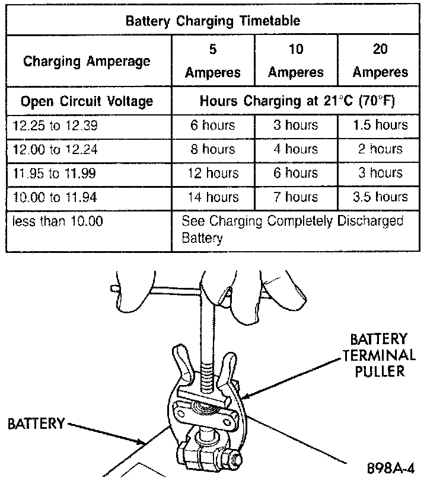
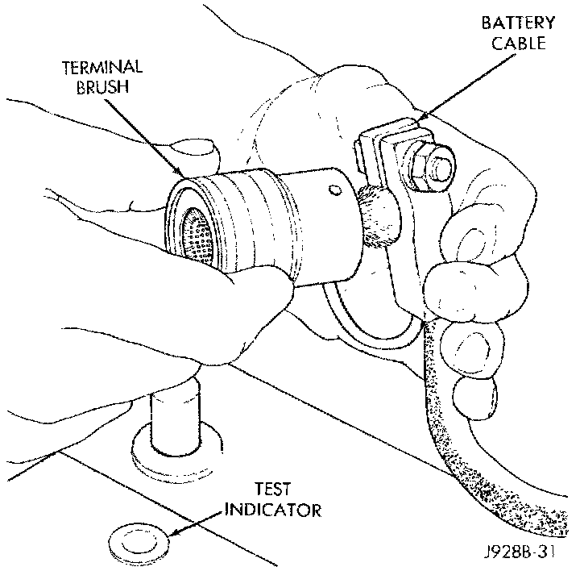
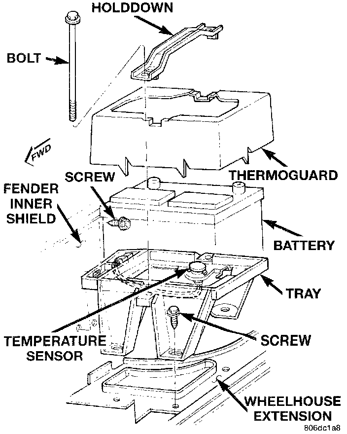
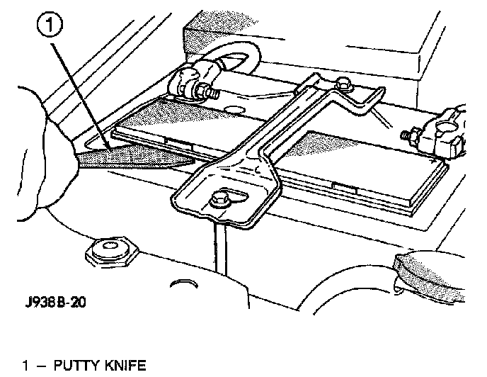
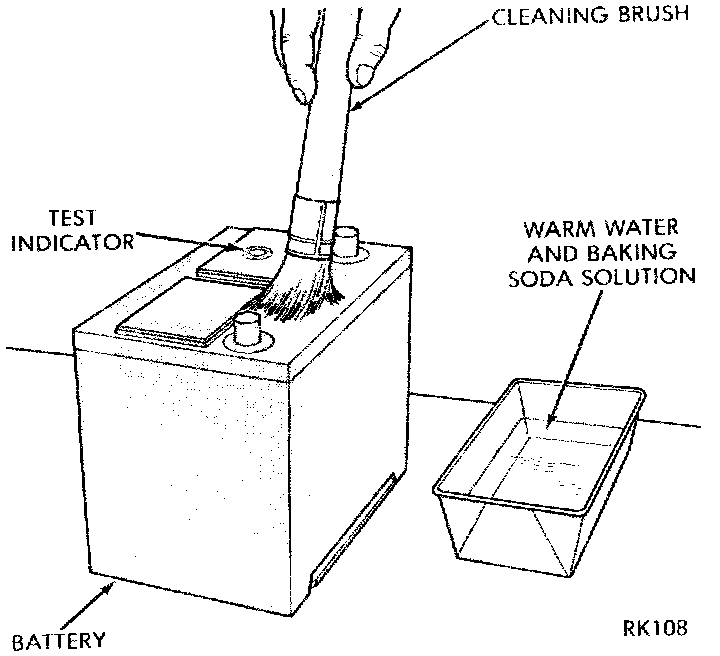
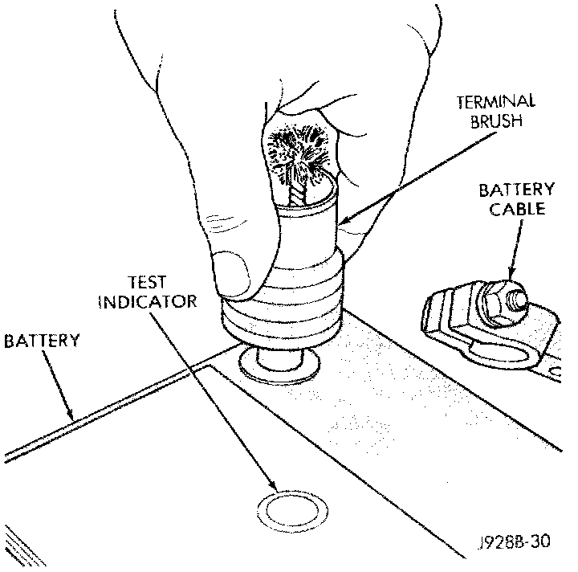
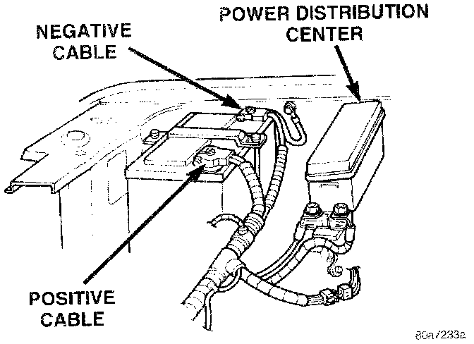

Battery Replacement
REMOVAL and INSTALLATION1. Turn the ignition switch to the Off position. Make sure all electrical accessories are turned off.
Remove Battery Terminal Clamp - Typical:

2. Loosen the cable terminal clamps and disconnect both battery cables, negative cable first. If necessary, use a puller to remove the terminal clamps from the battery posts.
Clean Battery Cable Terminal Clamp - Typical:

3. Inspect the cable terminal clamps for corrosion and damage. Remove any corrosion using a wire brush or a post and terminal cleaning tool, and a sodium bicarbonate (baking soda) and warm water cleaning solution. Replace any cable that has damaged or deformed terminal clamps.
WARNING: WEAR A SUITABLE PAIR OF RUBBER GLOVES (NOT THE HOUSEHOLD TYPE) WHEN REMOVING A BATTERY BY HAND. SAFETY GLASSES SHOULD ALSO BE WORN. IF THE BATTERY IS CRACKED OR LEAKING, THE ELECTROLYTE CAN BURN THE SKIN AND EYES.
Battery Holddowns:

4. Remove the battery hold-downs and remove the battery from the vehicle.
5. Inspect the battery tray and the hold-downs for corrosion or damage. Remove any corrosion using a wire brush and a sodium bicarbonate (baking soda) and warm water cleaning solution. Paint any exposed bare metal and replace any damaged parts.
6. Inspect the battery case for cracks or other damage that could result in electrolyte leaks. Also, check the battery terminal posts for looseness. Batteries with damaged cases or loose posts must be replaced.
Removing Battery Cell Caps - Typical:

7. Check the electrolyte level in the battery. Use a putty knife or another suitable wide flat-bladed tool to pry the cell caps off. Do not use a screwdriver. Add distilled water to each cell until the liquid reaches the bottom of the vent well. DO NOT OVERFILL.
8. Inspect the battery built-in test indicator sight glass for an indication of the battery condition. If the battery is discharged, charge as required. See the Built-In Test Indicator and the Battery Charging procedures for more information.
Clean Battery - Typical:

9. If the battery is to be reinstalled, clean the outside of the battery case and the top cover with a sodium bicarbonate (baking soda) and warm water cleaning solution to remove any acid film. Rinse the battery with clean water. Ensure that the cleaning solution does not enter the battery cells through the vent holes. If the battery is being replaced, see the Battery Ratings and Classifications chart in Specifications. Confirm that the replacement battery is the correct size and has the correct ratings for the vehicle.
Clean Battery Terminal Post - Typical:

10. Clean any corrosion from the battery terminal posts with a wire brush or a post and terminal cleaner, and a sodium bicarbonate (baking soda) and warm water cleaning solution.
Battery Cables:

11. Position the battery in the tray. Ensure that the positive and negative terminal posts are correctly positioned. The cable terminal clamps must reach the correct battery post without stretching the cables.
12. Loosely install the battery holddown hardware. Ensure that the battery base is correctly positioned in the tray, then tighten the hold-downs to 2.2 N.m (20 in. lbs.).
CAUTION: Be certain that the battery cables are connected to the correct battery terminals. Reverse polarity may damage electrical components.
13. Install and tighten the battery positive cable terminal clamp. Then install and tighten the negative cable terminal clamp. Tighten both cable terminal clamp bolts to 8.5 N.m (75 in. lbs.).
14. Apply a thin coating of petroleum jelly or chassis grease to the exposed surfaces of the cable terminal clamps and battery terminal posts.